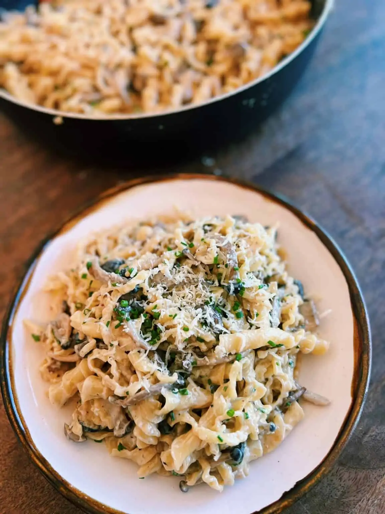

Spinach Pasta

Description
A japanese creamy pasta topped with cheese, spinach, and
mushroom for a lovely blend of flavors. The recipe adds soy
sauce, dashi stock, and shiitake mushroom to the already
timeless classic that is mushroom pasta.
You can also make this dish with fettucine, spaghetti, or udon.
Ingredients
- 4 servings of pasta cooked al-dente
- 2 cups of mushroom sliced
- 2 shallot chopped
- 3 tbsp butter
- 1.5 tbsp
- tsp dashi powder
- 0.5 tsp black pepper
- 1 cup cream or milk
- 4 servings of chives
- 4 servings parmesan cheese
Steps
- Prepare pasta based on boxed instructions
until al-dente, drain and set aside.
- Add sliced mushroom to a large frying pan
and turn the heat to med-high. Saute for
2-3 minutes without any oil. This will
bring out all the mushroom fragrant.
- Add 2 tbsp butter, soy sauce, and chopped
shallots. Saute for another 2-3 minutes or
until shallots are translucent.
- Pour in cream or milk, black pepper,
and dashi powder. Mix well and add salt to taste.
- Brint it to a simmer for 2 minutes, and add
the cooked pasta. Mix well and cook on high heat
for 1-2 minutes, so the pasta soaks in all the sauce.
- Finish off with one more tablespoon of butter and fresh
chives. Garnish with parmesan cheese to make it extra creamy.